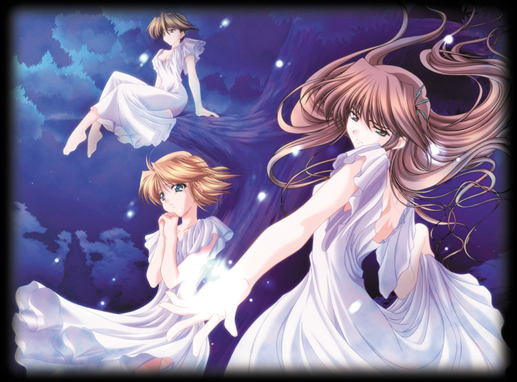

"Chocolate Covered Autumns" - Holy Cow 2002 (Gundam Wing/AC) (fanfiction.net)    [Chapter 7 !]
link here! next chapter! Hello people! I'm sorry for not updating in a long time, but let's just say
that there were a lot of things that I needed to take care of before
writing another one of my chapters. Such as college applications, essays,
SAT one and two.. Not to mention that I'm almost on my deathbed right now,
feeling so sick that it's almost impossible to realize what the hell that
I'm writing...^__^ But I'll try because I'm sure that many of you will be
wanting to read this (thanks for the reviews) but however, I don't think I
can keep up the speed I had writing the previous chapters. I'M SO SORRY! I
promise that I could after the college rush is over. And dammit, I don't
like writing essays for colleges, it's not really fun. If you get tired of
waiting for my updates, go read my other story! (shameless promotion and
stalling) Disclaimer: Realized that I didn't put one of these. Don't know, just don't have the habit to, I guess. Anyway, don't own them in this chapter or any other chapters to come. So if there's one chapter without a disclaimer, then well...this goes for them. Also, I do own the plot of this story, and taking this as your own would not be appreciated (glares) Be a nice person and simply read. Chocolate Covered Autumn Chapter 7: The Sweetest of Tortures Morning: 10:45 and it's finally official. I am now completely and blissfully blind. One can only take so many of suggestive smiles and innocent touches as two accidentally bump hands or coincidentally walk through the doorway at once, grinding past each other. Worse of all, I was only the observer in this outwardly innocent game as the subjects of my observations shamelessly make their time together count... though it is on my time. Good God, as if the Brady's weren't bad enough, but now, the Ricardo's join in the merry making. Quatre and Trowa are the red team, with Relena and Wufei as the blue when both battle it out for the comforts of the back closet every hour. The judge who is yours truly, just wants to stab his eyes out with a pencil. "Ok! Dammit! The back closet is no longer available!" I screamed into the masses when a giggling Quatre and a slightly hunched Trowa who had his arms around the petite blond smirked smugly as they walked by the Ricardo's, eyes challenging. "PEOPLE!" And the four who were running towards the closet as if their lives depended on it suddenly froze in place and their battling hands slowly loosened their death grips on the handle. Then, all of them spun to look around me, eyes pleading on their pathetic faces, wanting "the boss" to give them permission to screw around during work. Yes, I'm a very nice boss but this entire episode just resembles something out of Sex and the City, and since I'm not getting any...I don't think I'll really mind that they don't either. I shook my head sternly at them with my lips pressed firmly together and their faces, if it's even possible, became more pathetic. However, I was able to sense the waves of amusement floating off them at my frustration because they knew exactly why I'm frustrated..damn. For a brief second, I looked around me and pondered if it was humanly possible to stab myself to death with eggbeaters and forks. I was almost willing to try. "Duo?" The tentative voice behind me stopped me in the middle of planning my own funeral. I was trying to decide whether it'll be more pragmatic if held at the church, or where the cemetery is so that it'll be easier to just dump me into the hole when they're done with the sentiments. "Yes?" Spinning around, I saw a fidgeting Hilde who looked as if she was willing to be anywhere but here. I can't say that's a very good sign. "Um...." She squirmed even more as her fingers rested on her other arm, looking down and avoiding my gaze. "Out with it." I crouched down in order to meet her downcast gaze, all recollection of the other four forgotten as they continued to battle for their territory when the boss turned his head. I should really set some ground rules about washing their hands after coming out of there.. "It's my cousin." The barely audible words slipped out of Hilde's mouth in a rush and instantly, my head felt as if it was dunked in icy cold water when unwanted memories of Lucifer's son came back with a vengeance. "He needs a babysitter tomorrow because his usual babysitter is not available." A hint of desperation crept into the hurried voice of Hilde when she noticed that the corners of my eyes were indeed, jumping at a very disturbing rate. "And exactly WHY is that?" I asked through clenched teeth, my eyelids felt as if they were going to win the record for most taps per second in river dancing. "Um.... Honestly?" Oh no, that's not a good sign. "YES." "Her health insurance will not cover for her anymore on Tommy's babysitting job; she's getting too many seizures and her doctor also recommended for her that it's not good for someone of her age to be around Tommy constantly." "How old is she?" Curiosity got the better of me as I inwardly sympathized with this poor old lady who probably had to carry a cane around while going up and down the stairs to find Tommy. "31." If looks can kill and mental thoughts can affect people in reality, Hilde would be on the ground, regretting that she has ever brought up the topic with me and Tommy..well, let's not get to Tommy shall we, but let's just say that it involves several different groups of animals and all of them heavy if not carnivores. "But you really can't tell by looking at her, she looks very old for her age..." Hilde, taking in my darkening face, nodded furiously and looked to me with big, pitiful eyes. "Can I just bring him to work for one day?!" Whoa.big, big pitiful eyes. "Wait, let me think... Two broken chairs, one customer covered in chocolate syrup, the suspiciously large amount of ice cream missing, the beetles that were found in the jam, and the bubblegum in my braid!" Thinking of that less than pleasant memory and the hysterical laughter that haunted my dreams, I had a sinking suspicion that I was going to be found dead in the freezer tomorrow. "Please? Please?" Good god, she knows that I can't resist those eyes. I will seriously hurt Relena for teaching that lowdown trick to her. "Fine!" And with that said, I grabbed my coat and prepared to head out of the store for a very important mission. "Duo! Where are you going?" Without looking back, I slammed the door angrily and the bells started to jump in harmony with the twitching in my eyelids. I screamed back into the window. "I'm going to get some pepper spray!" ~~~~~~~~~~~~~~~~~~~~~~~~~~~~~~~~~~~~~~~~~~~~~~~~~~~~~~~~~~~~~~~~~~ This is the fateful day, I guess... I'm prepared at any time to scamper under a desk and scream for the life of me: "Duck and Cover!" Or... "Stop, Drop, and Roll!" And my all time favorite that just about covers any circumstances, "RUN FOR YOUR LIFE! It's Armageddon!" What can I say? I'm prepared and at the store yesterday, I got pepper spray, a fire extinguisher just in case ours wasn't working, or that we needed two, a first aid kit, and the phone numbers of the hospital, 911, and the fire station on speed dial. Then I gathered all of my friends for an emergency run-through about the quickest escape route, how to perform CPR when needed albeit I do think they've had enough practices with each other.... and last but not least, how to use an assortment of kitchen supplies as deadly weapons. Hit him where it hurts people! When Wufei looked at me unbelievingly and asked if all this was truly necessary, the other five pairs of eyes glared at him bitterly for his timely illness that day. We seriously believe that it was because he knew Tommy was coming and whatever lies he told us about whooping cough were no where near credible. Everyone suffered under his hands that day and Hilde was scurrying around for the week that followed the traumatizing experience to do us "favors" to redeem herself. I think she's still paying for that customer's therapy sessions. "Ok, we can do this! Bring him in!" Hilde obediently opened the door where loud pounds can be heard being delivered to the poor wooden surface. In popped hell with legs and a mouth that just wouldn't quit. "Hello people!" An innocent, almost angelic face looked at us with its large eyes that are the color of the sea and a head of blond locks to compliment the adorable image. Tommy has apparently forgotten that we've locked him outside for around five minutes and that he's been punching the defenseless door for the majority of that time. We weren't fooled by his harmless façade though, knowing that he used the same trick on us last time. When Relena bent down to coo at his cuteness last time, she ended up staying in that same position for the rest of the day after he got a horseback ride on Relena without asking. Everyone gazed at him guardedly, even the ever so accepting Quatre with his eyes narrowed and his lips grim. Well...everyone but Wufei who hesitated when the door opened, looking shocked at the seemingly absurd procedures that we "crazy, child abusing lunatics" have conjured up. "You guys, this is a harmless kid! What the hell were you so worried about?" He shouted angrily at us and gestured to the demon who was still doing his best impression of an angel. Wufei is so gullible at times. "After all the crazy stunts you guys have forced me through, it was all for this kid?!" Shaking his head in annoyance, Wufei was prepared to give us the lecture of a lifetime. Or he would have if a pair of small chubby arms didn't suddenly wrap around his waist in mid-sentence, throwing Wufei off balance. The next thing we knew, Wufei was on the ground in a heap with his face kissing the floor. It looks as if the day has begun... ~~~~~~~~~~~~~~~~~~~~~~~~~~~~~~~~~~~~~~~~~~~~~~~~~~~~~~~~~~~~~~~~~~ "Yay! Isn't this fun, uncle Duo?" An exultant Tommy asked me as he played jovially with his fingers digging into what looked to be a raspberry pie a la mode before it was effectively stirred up into one pink blob by his talented hands. I normally wouldn't mind that he was occupying himself with something other than my braid, even as disgusting as this scene was but I decided that his actions probably wasn't going to do me any good. ...or the poor girl who's currently staring at the laughing kid playing with what used to be her pie in shock, looking a bit too green for my comfort. I had a hard enough time cleaning up that chocolate mess last time, and I don't want to do anything like that again. Not to mention that lawsuits were never my specialty. "TOMMY! HILDE!" I was at my wit's end and felt as if I was going to die from frustration or at least become bald before I reach thirty. "Duo?" A timid Hilde walked by my side, cautious of the girl who looked as if she's going to faint headfirst into that pink monstrosity. "Hilde...if you don't kick this kid out in one second, I'm going to fire everyone and burn this place down." I said in a cool, controlled tone that left no room for disagreement. Hilde and the others overhearing this conversation gulped at the level of aggravation that I've managed to reach. "Ha ha, Duo, you can't possibly be serious." Relena laughed uneasily, trying to calm me down and change my mind about throwing her out into the streets. It probably would have worked too if my favorite shirt wasn't covered in the mustard that I've hidden for later use in the closet. The only comfort that I was looking forward to after this long, long day was now found on my shirt. Can you really blame me for being a tad bit pissed? "Fuck!" It was the only word that I found adequate enough to sum up the situation I'm dealing with. But wouldn't you know it, this kid has a great talent of picking up things he shouldn't. "What's that word, uncle Duo?" I froze at the outwardly innocent question. A sharp gasp of exasperation was heard from Hilde and all of us were perfectly aware of what's to come. "It sounds cool! What does it mean?" I inwardly cringed at Tommy's words, seriously considering taping my mouth together for the remainder of my sorry excuse for a life, or better yet, end it here. I would really love to put that new set of carving knives into good use because I don't think there's a better cause for using them than right now. "Fuck, Fuck, Fuck, Fuck, Fuck a Doodle Doo!" Tommy evidently has great appreciation for the word of the day that was obviously different from the other words his teachers are allowed to teach him. Words such as Box, Cat, and maybe Dog. I can't wait until he tries to prove his new knowledge to his fellow students. Oh god, is it such a sin to commit murder? I mean, he's going to hell anyway so wouldn't it be better if... I don't know, help him get there sooner? "Did I come at a bad time?" An annoyingly unruffled voice piped up behind me. Fear and humiliation instantly paralyzed me. Of all the worse possible times that Heero can suddenly surprise me with his presence and as welcoming as that presence is, this has got to be the mother of all humiliations. I'm covered in yellowish brown stains that looked similar to what's behind bars in the shady streets of new York, my hair is escaping my braid in disarray, and I look as if I'm about to kill anyone who comes within five feet of me. "It's not Sunday!" I think I've noticed the trend of my speech patterns around him. It's all the stupidity that I am able to muster up in me, released in one single brilliant comment that is able to make everyone fall flat on their faces at its lack of creativity. "I was in the neighborhood." He replied matter of factly as if he wasn't in this room, wasn't here with my open jaw staring at him, and wasn't faced with the knowledge that he needed a pepper spray. The bastard, he's not human. Sensing my temporary inarticulateness, Relena came quickly to my rescue by sprinting in front of me and blocking Heero's direct view of my dismay expression. Her eyes though, silently warned him of all the miserable and unthinkable actions that the little boy who's looking up at Heero in childish wonder is capable of. Heero looked at her as if she was completely insane but at the instant that Tommy cheerfully stepped near him, he backed away as if bitten, seemingly finally realizing the devious glint in those wide eyes. "Heero, it would be better if you left now and save yourself. Of course, you can always stay and help us tie him up." With that, a maniac grin came upon Relena's face which caused me to be slightly worried. Alas, the warning came too late as an undeniably annoyed Heero looked at the chubby little fingers that tightened around the lining of his jacket. A tugging match seemed to fail as Tommy's fascination to the jacket multiplied tenfold along with the strength of his stubborn fingers. I can almost see Heero's frustration at this unforeseen situation that is most assuredly unwelcoming for him. "OH MY GOD!" Relena's eyes enlarged and multiple obscenities came from her lips after Tommy's face cringed and his nose crinkled to produce the biggest sneeze I've had the misfortune to ever see besides in MTV's Jackass. The majority of it all ending up on the strategically placed jacket in front of him. Ok, nevermind, all of it ended up on the poor jacket. Guess what he chose to use as a tissue? Tommy, happily free of the annoying stuffiness in his nose is being stared by a murderous pair of cobalt blue eyes. Blissfully ignorant of images of nooses floating around the minds of everyone, he wiggled his nose gleefully, rubbing it with his fingers before running away quickly when the necklace of Hilde captured his short attention span of ten seconds instead. Looking at me with a surprisingly tranquil expression on his face, Heero's sight rested on me and if it wasn't for the slightly vindictive twinkle in his eyes, I would have thought that he was in shock. Still, the air of dangerousness that engulfed him intimidated me to edge back slowly, taking Relena with me. He stood there as if he was a statue and then, almost mechanically, he stalked towards Tommy as if he was a hunter hunting his prey. Can I tell you exactly how sexy that image is? Like..really, really, really sexy. Licking and panting sexy. Whoa boy, down. He walked to where Hilde was, red in the face and trying desperately not to faint when a pair of hands pulled on the gold chain that cut off her air supply. Dragging the squirming devil by the collar effortlessly, he yanked a screaming and crying Tommy to where I was gasping at how quickly he had Tommy under his control. "Do you mind if I had a little talk with him outside?" He regarded me calmly, ignoring the little punches thrown his way and the curses that no decent little kid of his age or any should know. But of course, knowing how much of those have been directed to him, he must have learned during the years. "No...not at all..." Staring at him unbelievingly, I'm sure I looked quite the image of the composed restaurant owner but frankly, I don't care and Tommy is getting what is coming to him surely. I can almost sense the evil smirks that manifested on the faces of Trowa, Wufei, Relena, and even Quatre, though it has always seemed impossible for him. I'm sure that Hilde would have enjoyed this too if not for the fact that she has just collapsed onto the sofa. "Good" Came the curt reply as a teary Tommy was dragged outside the door, eyes quietly pleading for a helping hand, and not the few scattered claps heard from all corners of the restaurant. I leaned towards Relena, wary of the situation at hand. "After this, I'm inviting you to see Harry Potter." I quietly whispered in her ear and her amused gaze rested on me, not at all surprised at my seemingly random request. "Why Harry Potter?" "Because I heard that it was actually relaxing and they have good kids in the movies. And let's not forget long..." "A bath is relaxing.." "But not as fun and not three hours." "How about sex then?" Her eyes turned devious when she purposely said the question out loud as Wufei arrived with a mop to clean up the God knows what on the ground that was from a trip Tommy took outside. Is that moving...? Wufei nearly dropped the mop on the ground at her words which caused Relena to giggle helplessly. "Sex? For three hours?" My eyebrows rose up to show my skepticism at her suggestion. "Relena, I've been praying for that for my entire existence after I hit puberty and it's still not humanly possible. Harry Potter is more appealing right now." "Ok..you could do something else after the actual sex with the other person" Relena jokingly punched me on the shoulders when I looked at her disbelievingly. "Yeah, sleep, but that's always boring." "I believed that I said with the other person..." "Doesn't that person have to sleep too?" "What happens if it's two in the afternoon?" "I can go see Harry Potter afterwards." And with the words escaping my lips, my mind conjured up images of Heero wearing a robe and riding on a broomstick, not wearing anything underneath of course. When the wind gently lifts the edges of that robe.. Oh god, I need to see that movie. "Sure, I'm sure you'll be busy tonight then, grab that person and have fun." Wufei, we knew was listening to this conversation while appearing uninterested, turned an interesting shade of red as Relena put emphasis on how fun it is.. "Wait, there's no other person." My face became unrealistically pitiful when in actuality, my overly active mind is thinking up of plots of how to make that Harry Potter fantasy come true. "Awwwww, I'm sure that there'll be someone who will be willing to have sex with you." "Really..are you willing?" Positively wicked smirks appeared on the faces of Relena and me when we became acutely aware of a choking Wufei behind us and the entertained smiles of Trowa and Quatre. They were attempting to put a little bit of order back in what Tommy has destroyed. Personally, I don't think we can salvage those lava lamps anymore and I doubt anyone would want to touch those forks after Tommy had experimented dissection using them as operation knives. "Maybe... how about trying to convince me tonight, love?" And with a sultry smile, winked at me and flaunted the slight swing of her hips as she walked away into the kitchen, knowing exactly who was going to follow. Wufei coughed a few times before running after her, not forgetting to glare at me before hunting her down and closing the kitchen door in the meantime. Ironic as one door closes, another opens and an encouraging sight welcomed our eyes. A puffy eyed Tommy came in almost soundlessly, followed by a stern looking Heero, eyes intense and... my legs are now made of rubber. Thank you God "I'm sorry for the problems that I have caused today. I will never do it again" Said a visibly unwilling Tommy with his lips pouting and his eyes red. It's a sight that would break anyone's heart but alas, everyone in the room were clearly sadistic or at least after how he has tormented us for the past few hours, and the smugness prevailed above any little compassion that we do have. My smirk, if possible, got even wider. Hell, I may be in a complete mess and my face might frighten any children into having nightmares, but I am feeling a lot better. "Heero, have I told you how much I loved you recently?" Albeit the joking, there's always some truth and I might never get this chance to say these words again. Heero's face looked stunned for a second, apparently unprepared for these words though said in humorous tones. A small smile emerged that was barely visible but I sucked it up like the pathetic, love sick fool that I was. It isn't everyday that I get to make the person that I'm heads over heels for smiling at me, especially a smile that was this beautiful. "Not recently.. I wonder why." Heero's tone, though bordering sarcasm was betrayed by the waves of amusement perceptible within his eyes. Smirking at each other, we must have looked like lunatics to passing strangers as repulsive and unmentionable substances are visible on our clothes and yet, the wicked smiles on our faces were wide and practically identical. "Care to fulfill my dying wish.. or his, by telling me what you've just told him?" Truth be told, I really want to know and if it works as well as it looks, it might be pleasant to let Tommy in here more. I mean...he isn't so bad and I get to torture him like he did me. Revenge is a bitch. "Nothing much." At my pointed glare, he struggled, the smirk never leaving his face as his hand came to rest upon Tommy's shoulder, ignoring the little cringe that shook the boy's body as he felt the touch. "I just told him what Santa does to bad boys." At that name, Tommy looked as if he has just seen a ghost and his face turned an unhealthy shade of white with his entire body shivering. "You mean give them coal?" Completely baffled, I had no clue how that would affect Tommy to such an unbalanced degree. "Not that version of the story..." I see... "Anyhow, I think I should go home and change now." Disappointment hit me sharply with the realization that he must leave. Yet at the same time, a brilliant idea crept into my mind and I dare say it's the best one I've ever had. "Heero, will you be willing to leave that jacket with me? I feel really bad about what happened today and I would be willing to take it to the cleaners." Not feeling at all guilty about the deceit that I was about to pull, I gave him my most guiltless expression when he looked tentative about my offer. "It's really no problem and if you don't let me do you this little offer, I'll feel terrible for the rest of the night." Giving him a slight pout that I learnt from Relena which rarely fails, I tried to convince him of my sincerity. His eyes did soften at my fabricated earnestness. "You can pick it up tomorrow when you come." Score! I am bloody brilliant. "Fine." Turing around to take off his jacket, he revealed a loose black turtleneck underneath that proved beyond a doubt that black was his color and that I would love to scavenge for clothes in his closet. That boy has good taste that's simple yet elegant, not to mention black and it's public knowledge how I feel about that color. "Thanks, appreciate it." He said in a husky tone caused by the sudden cold that attacked him, but it had the same affect on me nevertheless. I'll be having good dreams tonight... As soon as he left, my eyes followed his figure as he disappeared behind a mass of people, just like the first time I saw him with the exception that I knew he was coming back. That has got to be the most comforting thought in the world, to know that there's something I could look forward to when waking up. "You're never going to give that back to him huh?" A soft chuckle was heard to the right of me as the owner of the grin slowly walked into view. Quatre looked at me with laughter within his sea blue eyes. He knows me all too well, and before I've even nuzzled my face into Heero's jacket and smelled the masculine scent of rich spices and the forest that is uniquely Heero, I confessed Quatre's words to myself. "Unfortunately, the dry cleaners had a small accident..." I did not reread this after I read it, and like I said, I have no time right now to change it. This is probably the chapter that I'm going to rewrite and revise some times in the near future. Sorry to those people who were expecting something better... ( I promise I'll do better! Please forgive me! The grammar and the spelling errors are terrible! next chapter! |

|